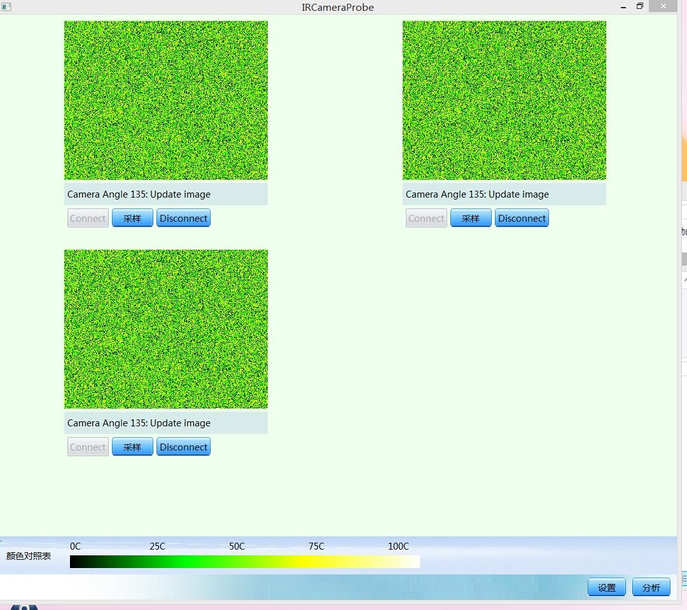
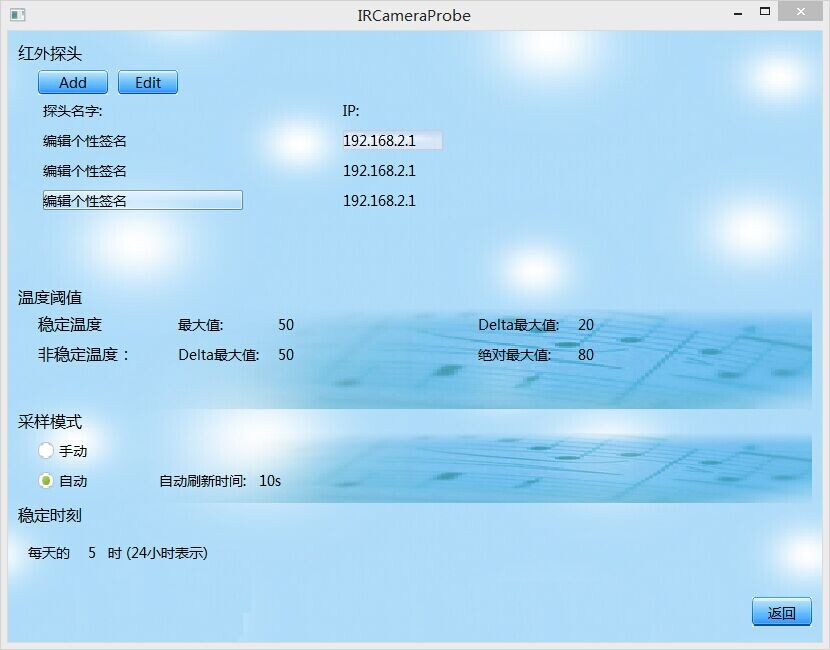

技术要点.
- 还在为对象生命周期管理而烦恼吗？使用RAII吧，用unique_ptr来托管局部对象，用shared_ptr来托管共享对象吧。
- 文件依赖太多？编译太慢？用最小包含原则和前置声明等C++最佳实现技术吧。
- 阻塞UI操作了，怎么办？使用多线程来避免阻塞操作？Oh，you are right！使用锁来避免临界区冲突？但是如何能在不阻塞主线程情况下返回异步通知？使用MessageLoop吧，通过任务来异步调用通知吧！
- 对锁粒度控制不准？已经惧怕死锁？还是使用MessageLoop吧，将本应该在其他线程上运行的对象通过任务的形式发送到其他线程上去运行吧。想收到异步通知？将任务发回到本线程运行吧。
- 回调任务？使用std::function吧。新C++的lambda将以往需要创建类的代价变成寥寥几句代码即可搞定的小伎俩，想使用类成员来作为任务？bind让你以最灵活的方式生成最简洁的函数对象。
- 线程间任务退出崩溃？用引用计数智能指针啊！shared_ptr帮你维持线程对象的生命周期。想从类成员中获取shared_ptr?继承enable_shared_from_this吧。不想让shared_ptr蔓延至整个程序？使用观察者回调吧。
- 想绘出清新漂亮的UI界面吗？用DuiLib吧。想在不修改一行代码的情况下改变界面风格和界面布局吗？用DuiLib吧。
- 某天觉得DuiLib太难用了，想改用其他UI了？使用MVC模式吧，将逻辑代码彻底解耦，就算有一天不用DuiLib了，我的逻辑代码依然可用。
- 想解耦视图和逻辑，但是视图和逻辑代码如何交互？使用观察者吧。想将视图或者逻辑改变即时通知到其他地方？还是使用观察者吧。
- 用户设置和命令行等设置参数在整个程序都有可能用到，将此对象在各个对象中传递？no, no, no, 还是使用单例模式吧，以后再也不用重复传递设置参数信息了。
exe rar下载
Download the exe file软件截图
程序主界面
用户设置界面
用户编辑设置